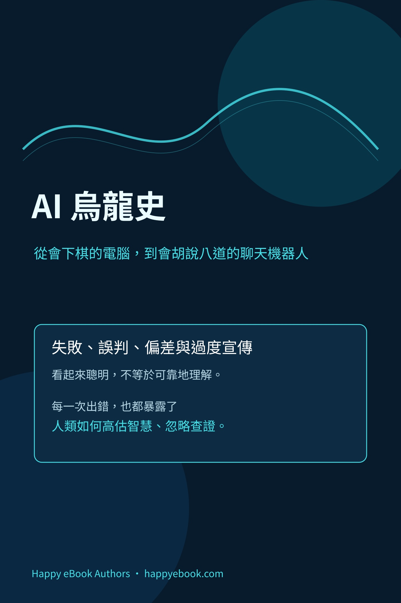

Google Play Books
AI 烏龍史
從會下棋的電腦，到會胡說八道的聊天機器人

付費購買提供試閱版
AI 烏龍史
從會下棋的電腦，到會胡說八道的聊天機器人
AI 的歷史不只由突破組成，也由失敗、誤判、偏差與過度宣傳共同塑造。從會下棋的電腦、自動駕駛事故與人臉辨識偏差，到生成圖片、虛構引用、benchmark 誤讀與公開聊天機器人翻車，本書帶讀者回到可查證的事件與原始資料，理解 AI 為什麼會在看起來聰明時犯下嚴重錯誤。 全書以通俗歷史、失效鏈分析與使用者檢查表，拆解資料、模型、介面、組織決策與人機責任之間的關係。適合一般讀者、教育工作者、產品經理，以及需要判讀 AI 輸出的專業工作者。